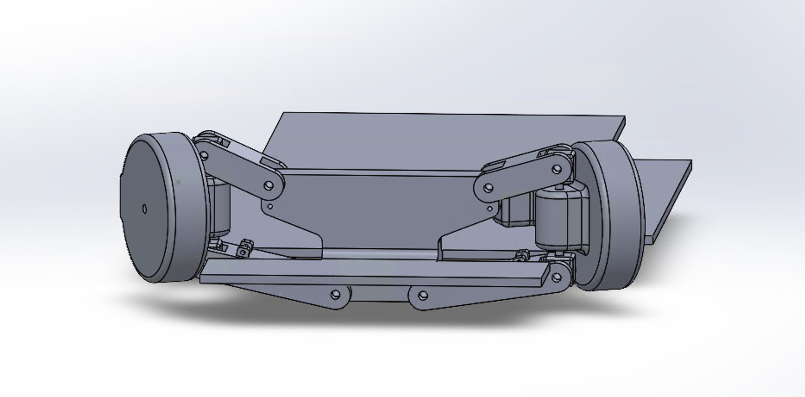
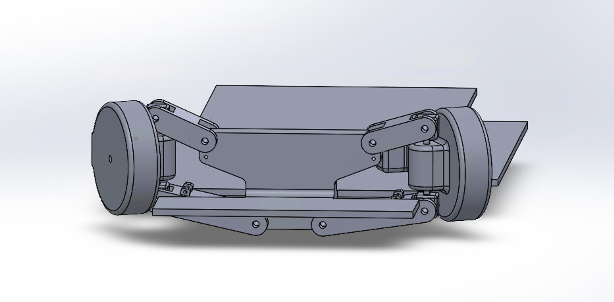

RC Car Design
Personal Project
Member
Overview
This project, initiated with two of my peers, involves designing and building a toy RC car as a way to apply and expand our mechanical design knowledge. My specific role is to design the steering and suspension systems, focusing on functionality, manufacturability, and compatibility with 3D printing. The project emphasizes learning through research, CAD iteration, and testing, with the goal of producing a robust and efficient small-scale vehicle.
My Contributions
SolidWorks CAD Design
To begin, I conducted extensive research into steering mechanisms, evaluating options such as Ackerman steering, Anti-Ackerman steering, and Parallel steering. Ackerman steering, widely used in cars and trucks, ensures both front wheels follow a shared turning center to reduce tire sliding. However, its complexity and limitations for sharp or high-speed turns made it less suitable for this toy-scale application. Anti-Ackerman steering, often used in high-speed vehicles to give the outer wheel more grip, was not necessary given the scale and intended use of the car. Ultimately, I selected Parallel steering, where both wheels turn at the same angle, as the most practical choice for a toy RC car due to its simplicity and ease of implementation.
In addition, as a team, we explored possible motion transmission systems for steering actuation. Three mechanisms were considered:
- Rack and Pinion, converting rotational motion into linear motion for wheel turning, offering simplicity and real-world applicability.
- Slider Crank and Scotch Yoke, which use linkages to achieve a similar conversion but introduce added complexity.
The rack and pinion was selected for implementation due to its efficiency, ease of integration, and direct application to automotive steering systems.
For the suspension, I investigated both the MacPherson Strut and the Double Wishbone Suspension. The MacPherson Strut, while simple and compact, was less feasible for this design due to vertical space limitations. In contrast, the Double Wishbone Suspension, functioning as a four-bar linkage, allows independent wheel movement, better geometry control, and improved handling. This design was selected and adapted for the RC car, with considerations for spring and damper placement to absorb shocks while maintaining stability.
Throughout this process, I created CAD models in SolidWorks to visualize and test concepts. These models were iterated with adjustments to dimensions, clearances, and mounting features to ensure compatibility with 3D printing. Ongoing refinements include strengthening connection points, incorporating ball joints where necessary, and validating that the geometry allows full steering articulation without interference.
 

Outcomes (In Progress)
- Strengthened understanding of steering and suspension principles, including Ackerman geometry and four-bar linkage systems.
- Improved CAD skills through iterative modeling and design adjustments for 3D print compatibility.
- Developed collaboration skills by working closely with peers to coordinate subsystems and align designs with the overall RC car framework.